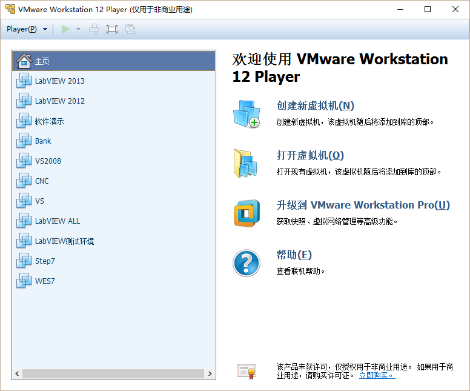
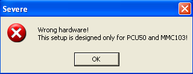
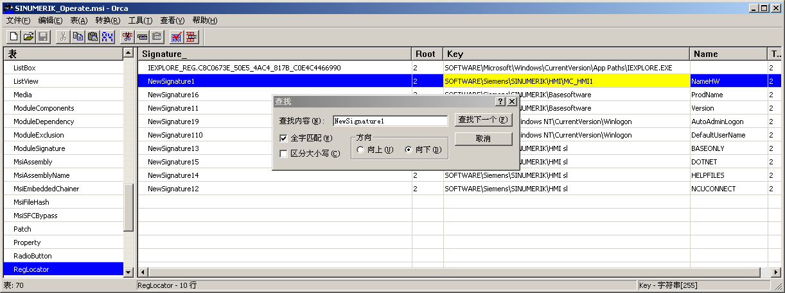
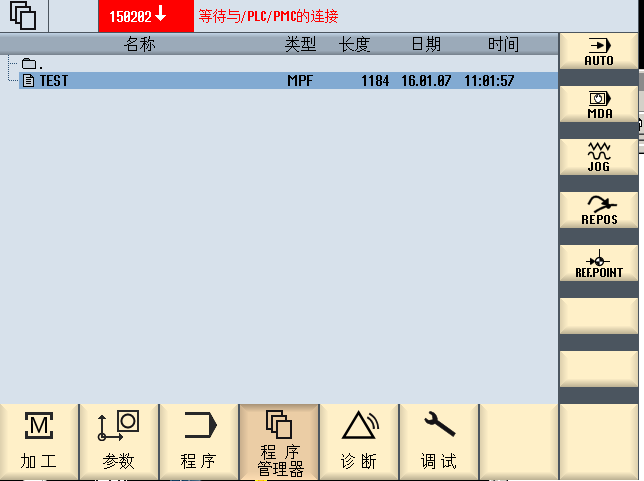
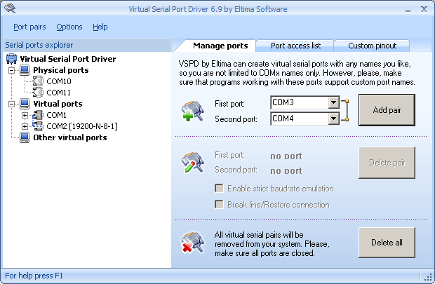
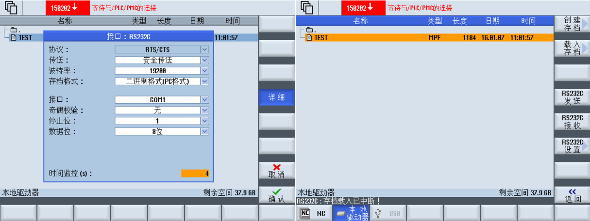
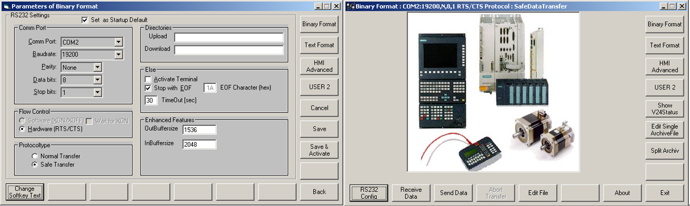

虚拟数控机床测试系统的搭建
原创作者：王永建(blog@wangyongjian.cn) 原文引用地址：https://blog.wangyongjian.cn
前言
随着制造业大的迅速发展，数控机床在加工领域得到了广泛的应用。为提供生产效率，今年来计算机辅助制造（CAM）的应用越来越多，在计算机上即可完成数控机床加工程序的编写、模拟加工生产等功能，对数控机床设备的DNC功能要求也越来越高。
本文主要讨论在开发数控设备的DNC功能中NC代码传输功能软件过程中，搭建的软件环境中实现开发过程的调试工作。通过在虚拟机中模拟一台真实的数控机床，实现在没有真实机床设备的情况先完成软件的开发以及测试工作。
一、仿真机床的现实原理
在一些高端的数控系统中，为实现更多的功能，通常采用了更高性能的工业PC机做为CNC控制系统的运行平台，这类控制器大多采用的是Linux或者Windows的嵌入版操作系统，比如西门子的840D采用的就是基于Windows NT、XP的嵌入式版本操作系统。还有一些独立的基于PC的CNC系统软件，支持的操作系统有Linux和Windows。如Cadem公司的NCnet软件包。本文中仿真机床的实现原理就是数控系统支持的操作系统上安装对应的数控系统软件，以实现CNC的部分功能，模拟真实机床。
二、模拟环境的搭建
为了在特定的系统用来测试各种数控软件并满足数控系统软件对操作系统的兼容性要求并且防止当前的系统被搞坏。在这里使用了VMWare公司的VMPlayer虚拟机软件做个测试平台。 
Vmware Player是一款官方精简版的虚拟机软件，用户无需重启电脑即可在同一台机上运行1个或多个操作系统。凭借其免费策略、简单易用的界面、流畅的性能、小巧的体积以及对多种不同操作系统的兼容性已成为很多人首选的虚拟机！
利用虚拟机软件，我们可以随意的安装各种操作系统，可以很好的解决软件的兼容性问题；或者在虚拟机的隔离环境中安全地试用测试各种软件包括尝试一些危险的操作。在虚拟机里所做的任何操作都不会影响当前主机的操作系统。
三、安装数控系统软件
本文通过安装西门子840D系列数控系统的系统软件SINUMERIK Operate模拟一台SINUMERIK数控机床。西门子840D采用的是西门子的嵌入式工控机PCU 50，SINUMERIK Operate安装在PCU 50上，PCU 50安装有微软的Windows XP Embedded SP2系统，是Windows XP SP2版的嵌入式版本，与XP系统兼容。为方便系统安装，在这里我们在虚拟机里安装标准版的Windows XP SP2操作系统。
SINUMERIK Operate为PCU 50平台设计，在安装过程中会检测硬件平台信息，在非PCU 50上安装会弹出提示信息并终止安装。

通过对安装文件SINUMERIK_Operate.MSI的分析发现其在安装过程中对硬件平台的检测实际上上在检查SOFTWARE\Siemens\SINUMERIK\HMI\MC_HMI1下的NameHW的键值。由于新安装的操作系统没有这个键值，安装时无法检测到，SINUMERIK Operate安装程序会认为是合法硬件，退出安装。尝试通过手动创建该键，并设置设置键值为PCU50，将新安装的操作系统伪装成PCU50控制。

再次安装SINUMERIK Operate即可顺利完成安装。通过开始菜单即可启动系统程序。

至此，一台840D的模拟仿真机床已经安装完成，可以进行DNC功能中的NC代码传输功能的测试了。 
四、虚拟串口通讯
840D支持串口传输NC程序代码。本文通过Virtual Serial Port Driver在虚拟中虚拟一对虚拟串口，通过内部的虚拟串口环路显示串口通讯

Virtual Serial Port Driver 简称VSPD，它是专为虚拟串口提供的驱动解决方案，如你的电脑没有串口，或串口不够用，可以使用这个工具来添加任何的端口号。本例中通过VSPD虚拟了一对虚拟串口COM1和COM2，COM1用于SINUMERIK Operate，COM2用于NC下载程序SinuComPCIN。
五、NC传输测试
首先在SINUMERIK Operate设置设置串口属性，设置的内容如下图所示，包含串口属性和协议格式。设置完成后可以通过RS232C发送和RS232C接收软键盘触发NC发送和接收任务。

启动NC程序传输程序SinuComPCIN，并设置串口属性和SINUMERIK Operate一致。设置完成后，

通过BACK按键返回操作界面，下面就可以进行NC代码的上传及下载了。
六、总结
本文讲述了一种通过虚拟机软件VMPlayer、数控系统软件SINUMERIK Operate、虚拟串口软件Virtual Serial Port Driver和NC代码传输软件SinuComPCIN。完成了一台虚拟数控机床并实现了NC代码的上传和下载功能测试。在纯软件环境中满足了开发测试需求，可节省开发开发成本并可以根据需要搭建不同开发环境。